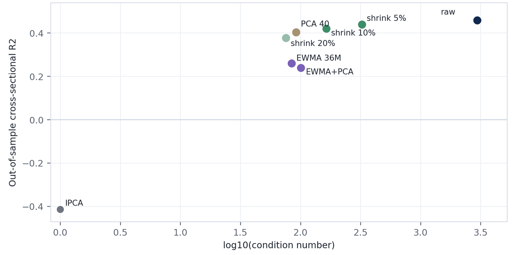

Building the characteristic ruler
Measured · Project · research evidence · June 2026 · source: report Geometry Construction for Statistical Factor Models (27 June 2026) · All projects
What I built
- A controlled comparison that holds the estimator fixed and changes only how the characteristic ruler (the Gram metric) is built: raw average; 5%, 10% and 20% shrinkage; a 40-direction filter; a 36-month EWMA; EWMA plus the filter.
- A rolling stress test of every construction over 171 windows.
- The same families and the same kind of checks are built into the
gcdepackage of my NA-IPCA toolkit (shrinkage, low-rank and exponentially weighted families; labels such asFAIL_NOT_SPD).
Why it matters on a desk Anyone who estimates a large covariance or second-moment matrix in rolling windows meets this problem: the raw estimate keeps the most structure but cannot be inverted in 10 of 171 windows here, while every stabilised version can. In this design stabilisation leaves the fit unchanged and moves only its split between factors and intercept; what a change of ruler does to portfolios is tested in Same Forecasts, Different Portfolios, which traces the difference between the two rulers’ portfolios entirely to the units in which a fixed penalty is written (p. 22).
Skills and tools shrinkage and eigenvalue filtering EWMA estimation condition-number diagnostics rolling stress tests
Read with care. These are descriptive results from a working report, not from a published paper; the report calls its rankings preliminary and certifies no version as production-ready. The design is the fixed-window design of Same fit, different attribution: the pricing columns, predictive R² included, leave out the intercept (the part of expected return that no factor in this model explains). The report reads higher cross-sectional R² as better pricing; this page reads it as a different split. Same Forecasts, Different Portfolios notes that the fit cannot select a normalisation (p. 13), and none of the papers selects an optimal ruler.
The setting
A model that uses the characteristic ruler has to estimate it: the characteristic Gram matrix, whose entries are products of characteristics averaged across stocks and over an estimation window (the characteristics’ second moments). The raw average keeps the data’s overlap structure but can be numerically unstable, because a few directions vary far more than others. The condition number measures this: the ratio of the matrix’s largest to smallest eigenvalue, that is, the variation of the direction that varies most divided by that of the direction that varies least, where 1 means all directions are equally large. Risk teams routinely stabilise such matrices, by shrinkage, by eigenvalue filtering (keeping only the directions that vary most), or by weighting recent months more. This report keeps the estimation method fixed and changes only how the characteristic ruler is built. There are seven versions: the raw average; shrinkage of 5%, 10% or 20% toward a rescaled plain ruler (a scaled identity matrix, the Euclidean metric); the 40 directions that vary most (the leading eigenvectors), with a small floor on the rest; a 36-month exponentially weighted moving average (EWMA); and EWMA plus the 40-direction filter. The baseline is IPCA (instrumented principal component analysis, a standard factor model in which characteristics set each stock’s factor exposures) with the plain ruler.
Exhibit 1: Cross-sectional R² against numerical conditioning

(opens the full-size image in a new tab)Key takeaway. The raw average has the highest out-of-sample cross-sectional R² (0.458) but the highest condition number (2,963). Shrinking it by 5% keeps 0.440 at 325.5; the 36-month EWMA falls to 0.259. Because this statistic leaves out the intercept, a higher value means more of expected return is credited to the factors, not a better-fitting model (Exhibit 2). The choice is a trade-off between keeping the data’s overlap structure and numerical stability.
Exhibit 2: Every version re-splits the same fit
| Construction | XS R² | Pred. R² | TS R² | Total R² | Condition number |
|---|---|---|---|---|---|
| IPCA (plain ruler) | −0.414 | −0.033 | 0.679 | 0.862 | 1.0 |
| Raw average | 0.458 | 0.034 | 0.679 | 0.862 | 2,963.0 |
| Shrink 5% | 0.440 | 0.033 | 0.679 | 0.862 | 325.5 |
| Shrink 10% | 0.420 | 0.031 | 0.679 | 0.862 | 164.1 |
| Shrink 20% | 0.376 | 0.028 | 0.679 | 0.862 | 75.8 |
| 40 directions | 0.403 | 0.030 | 0.679 | 0.862 | 91.9 |
| EWMA, 36 months | 0.259 | 0.019 | 0.679 | 0.862 | 84.5 |
| EWMA + 40 directions | 0.240 | 0.018 | 0.679 | 0.862 | 100.9 |
Out of sample, three latent factors; all rows converged. XS = cross-sectional; Pred. = predictive; TS = time-series. Source: report Geometry Construction for Statistical Factor Models, p. 3 (which also shows in-sample rows and pricing errors).
Key takeaway. Time-series R² (0.679) and total R² (0.862) are identical in all eight rows. Each version of the ruler (each estimate of the Gram matrix) splits the same fit differently between the factors and the intercept; only the split-dependent pricing columns, predictive R² included, move.
Exhibit 3: A raw rolling ruler can break
| Construction | Median condition number | Largest finite | Windows that cannot be inverted |
|---|---|---|---|
| Plain ruler (identity) | 1.0 | 1.0 | 0 |
| Raw average | 4,031.2 | 13,615.0 | 10 |
| Shrink 5% | 377.6 | 522.4 | 0 |
| Shrink 10% | 187.9 | 264.8 | 0 |
| Shrink 20% | 86.2 | 122.4 | 0 |
| 40 directions | 102.1 | 146.5 | 0 |
| EWMA, 36 months | 86.5 | 122.6 | 0 |
| EWMA + 40 directions | 102.5 | 146.8 | 0 |
Each construction re-estimated over 171 rolling windows; the report does not state the window length or dates. A window in which the estimated Gram matrix is singular (cannot be inverted) has an infinite condition number. Source: report Geometry Construction for Statistical Factor Models, p. 4.
Key takeaway. Re-estimated window by window, the raw average has a median condition number of 4,031, reaches 13,615, and cannot be inverted at all in 10 of 171 windows. Every stabilised version’s condition number stays below 523. The report’s practical rule: do not use the raw average without stabilisation, which it calls a safety layer (p. 4).
Where this connects
- Same Forecasts, Different Portfolios re-estimates the characteristic ruler (the Gram matrix) every month in three versions (EWMA with a 60-month half-life, equal-weighted 120 months, rolling 60 months) and follows each into portfolios (p. 17; Internet Appendix IA.E.5).
- Characteristic-Space Metrics carries the ruler’s estimation error into the confidence intervals.
- Related projects: NA-IPCA toolkit (where these constructions and checks are packaged) · Same fit, different attribution.